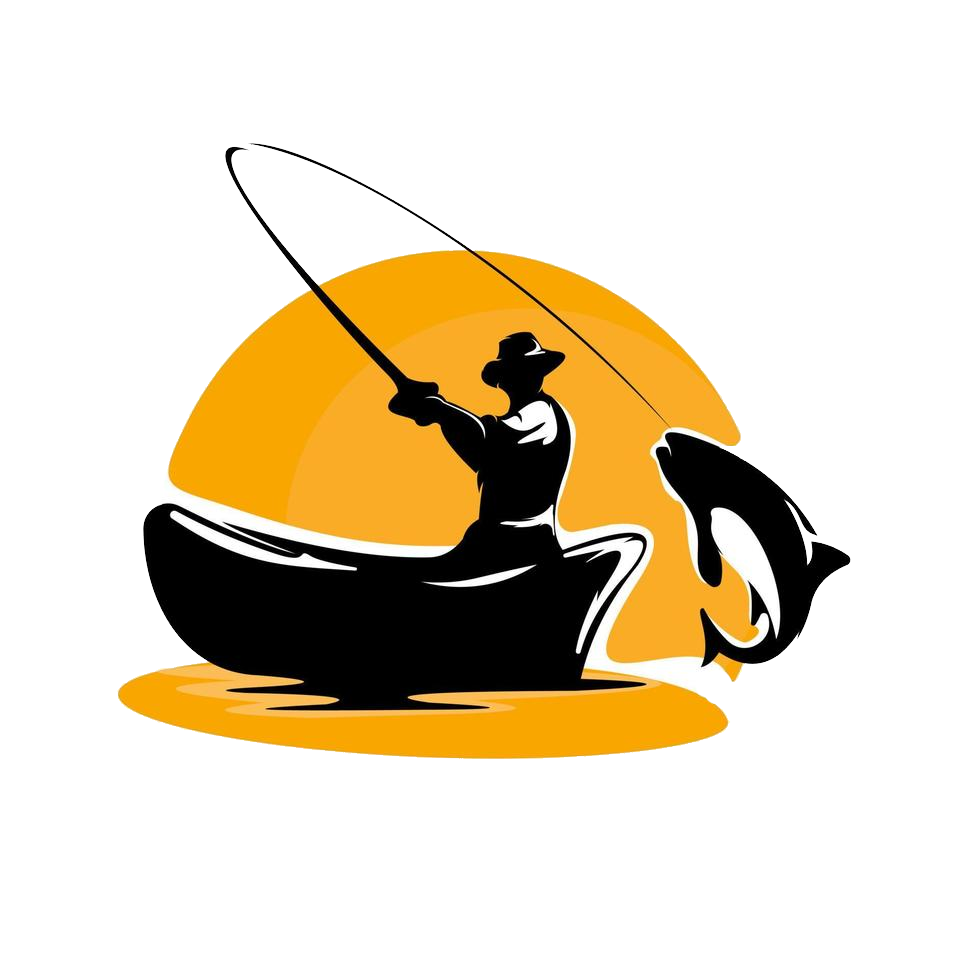

Projeto de conscientização e conservação da vida marinha
MarAzul é um projeto que tem como objetivo contribuir com a conservação e o uso sustentável dos oceanos, mares e recursos marinhos, disponibilizando uma lista das principais organizações que apoiam essa causa e como ajudar. Além de apresentar algumas curiosidades sobre o que existe na vida na água e dicas de preservação.
A vida em cima da agua
Os mares é o maior companheiro da humanidade desde os tempos antigos, sendo uma fonte de recursos naturais, comida e entretetimento. Alguns paises até cresceram suas culturas em torno do mar, utilizando da pesca como principal fonte de alimento. Sendo alguns desses paises o Japão, a Noruega, a Indonesia e as Ilhas Maldivas.
A vida de baixo da agua
A vastidão dos mares é algo que pouco ouvimos falar sobre comparado a tamanho a importancia que tem em nossas vidas. Ao contrario do que é acreditado o Mar é o maior produtor de oxigenio do mundo, alem de ser O maior ecosistema do planeta. Casa de milhares de organismos incluindo peixes de diversos tipos, corais, e outros organismos facinantes.

A vida na escuridão
Apos certa profundidade, a luz não consegue mais seguir pela agua, fazendo que o fundo do mar seja extremamente escuro alem da grande pressão gerada pela grande quantia de agua, mas isso não impede de existir vida mesmo nas condições mais extremas que nem mesmo a humanidade consegue conquistar até hoje. Como resultado da excasses de luz, peixes e outros organizmos evoluiram para produzir a sua propria luz atraves de Bioluminêscencia, É estimado que uma grande porcentagem de coisas sobre o mar seja desconhecida graças aos desafios de explorar tais locais extremos. Mas existe um peixe bem conhecido por aparecer no filme NEMO, que consegue produzir a sua propria luz, o famoso Anglerfish!

A verdadeira escuridão.
Escrever sobre a poluição dos rios e do mar que não recebe atenção da midia

A luz no fim do tunel.
Apesar de tudo isso, os danos ainda são reversiveis de começarmos a coexistir e proteger nossos amigos marinhos
Parceiros do Mar
Esse é um grande texto para testar a funcionalidade do botão de subir para o topo da pagina, então esse vai ser um grande texto apenas de nada com nada para aumentar o tamanho da pagina e assim ir aumentando o tamanho da pagina até que o botão apareça e ai vc coloca 200ml de agua quente e fecha a tampa, aguarda cerca de 5 a 10 minutos, adiciona o tompero e pronto, miojo rapido e facil com cancer adicionado, mas será que essa pagina precisa de ad? e o botão ser javascript tbm é doideira owo mas não encontrei uma maneira de fazer o botão apenas usando css a não ser que ele fique sempre parado no mesmo lugar mas ai não vai ter graça por isso eu fiz assim.